What we proceed to call the Albanian Catholic alphabet symbols are four symbols that were used in Albanian literature written in the Latin script from the earliest work of literature in the language (1555) till the onset of the 20th century (1904).
The symbols common to all works are the following:
⟨Ξ ξ⟩, which stood for dh, and when written double ⟨Ξξ ξξ⟩ stood for th
⟨Ȣ ȣ⟩, which stood for y
⟨Ɛ ɛ⟩, which stood for z
⟨Λ λ⟩, which stood for ll, introduced in 1685
All works written with these symbols were written by Catholics, and almost all of them were written for religious purposes, hence the label (Skendi 1960: 264f.). All of the books written in the alphabet published in the 17th–18th centuries were printed in Italy, most commonly by Propaganda Fide in Rome, while in the 19th centuries a good number of works using these symbols began to be printed by the Italian missionaries in Shkodër, as well as by some Catholic Albanians of of the city, which is why, perhaps misleadingly, the alphabet is also known as “Old Shkodran” (Rrota 1936: 92, Çabej 1968: 50). The alphabet fell out of use gradually after the creation of the Bashkimi alphabet (1895), which got rid of these symbols for a much cheaper to print in pure Latin orthography.
The three earliest symbols, ⟨ξ⟩, ⟨ɛ⟩ and ⟨ȣ⟩, descend from Old Cyrillic ⟨ѯ⟩, ⟨з⟩ and ⟨ꙋ⟩ (Çabej 1968: 50, Demiraj 2025: 7), while the ⟨λ⟩ only appears from Bogdani (1685) onwards and is taken directly from Greek. The orthography employed in these various works is not uniform over time, but these symbols are shared.
Most symbols can already be well represented with existing codepoints: ⟨Λ λ⟩ as the Greek U+039B ~ U+03BB, ⟨Ȣ ȣ⟩ as the Latin U+0222 ~ U+0223, and ⟨Ɛ ɛ⟩ as Latin U+0190 ~ U+025B, as well as the additional symbols only in Buzuku, ⟨ћ⟩ as U+045B, ⟨Ʒ ʒ⟩ as U+01B7 ~ U+0292 and the ⟨cz⟩ ligature as U+00E7.
Conversely, currently Greek ⟨Ξ ξ⟩ is used to encode the dh symbol in lack of a better alternative, but we consider this misleading both visually and semantically. It was perceived as a distinct letter, and over time acquired a stable and distinct shape, not going above the x-height in its lowercase form, and in the latest publications gaining a circular bowl shape in its uppercase form. Some works using the symbols also have some text in Greek, showing which would make the idea of simply entrusting the issue to the typeface non-trivial to implement. We propose the addition of two new codepoints for it.
There is an additional character exclusive of Buzuku, descending from Old Bosančica Cyrillic letter vedi ⟨в⟩, resembling a white square, occurring 15 times, only found in the word û “hunger” (whence modern standard Albanian uri), possibly standing for /w/ or similar (see Çabej 1968: 49, Genesin & Matzinger 2019: 109f., Demiraj 2025: 7). Whatever precise phoneme the letter stood for was already marginal in Buzuku's times and died out presumably shortly after, and as such the letter is not found in any other author. Visually, the issue could be avoided by using ⟨□⟩ U+25A1 WHITE SQUARE, which however is a symbol rather than a letter and fails to recognise the Bosnian Cyrillic origin. Given that Buzuku does not make casing distinction for any of the non-Latin letters, this letter only ever appears lower-case.
We also propose to add annotation to the existing LATIN SMALL LETTER OPEN E and its capital form mentioning its use as Albanian z.
Gallery
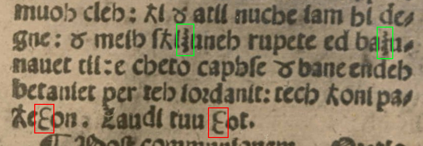
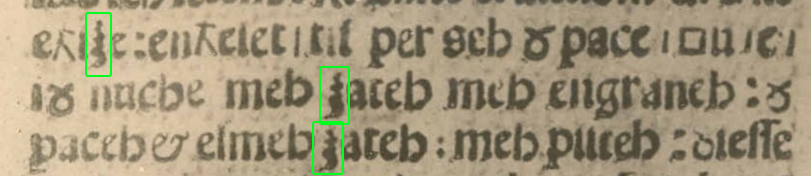
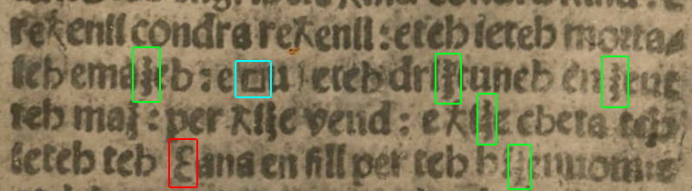
Buzuku (1555), folio 31r, 44r and 100v (left to right). Highlighted only ⟨ξ⟩, ⟨ɛ⟩ and ⟨□⟩ which are the focus of the proposal. (Image source: BKSH)
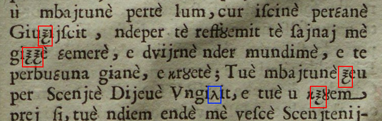
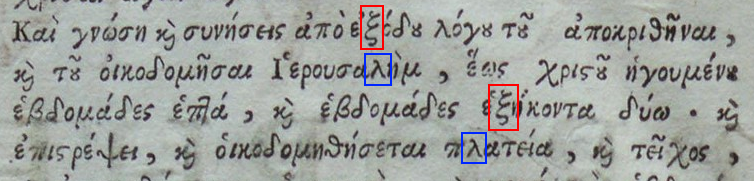
Bogdani (1685), volume 2, page 141 (left) and page 146 (right), showing how while ⟨λ⟩ looks identical in the Albanian and Greek portions, the Albanian ⟨ξ⟩ and Greek ⟨ξ⟩ look very different. (Image source: BKSH)
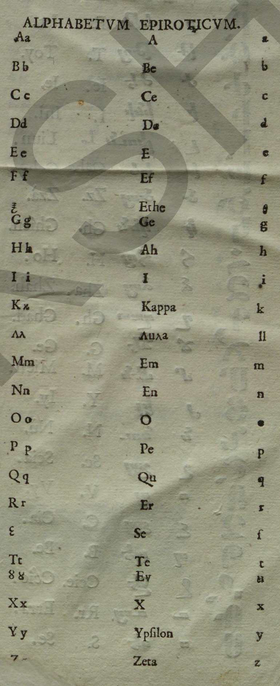
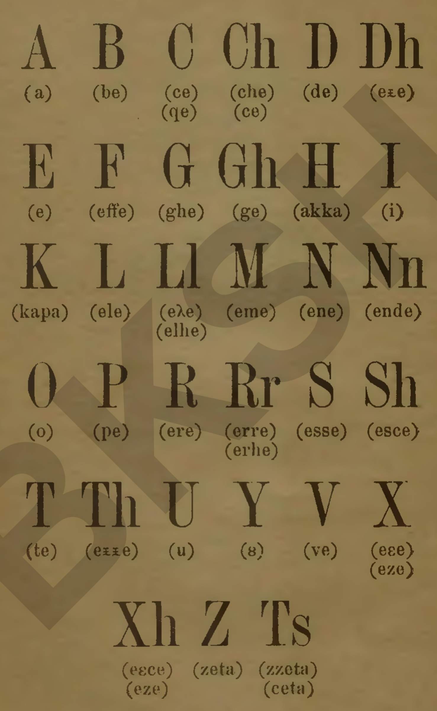
Left, one of the last pages of Bogdani (1685), volume 2, calling ⟨ξ⟩ ethe, ⟨λ⟩ λuλa, ⟨ɛ⟩ se and ⟨ȣ⟩ eu. Also note the position in the alphabetical order matches Greek ⟨θ⟩ rather than ⟨ξ⟩. Right, Abetari i qitun prej Shoqniet t’ Bashkimit t’ gjuhës shqype (1895), page 6, comparing the new proposed orthography with the old symbols. (Image source: BKSH)
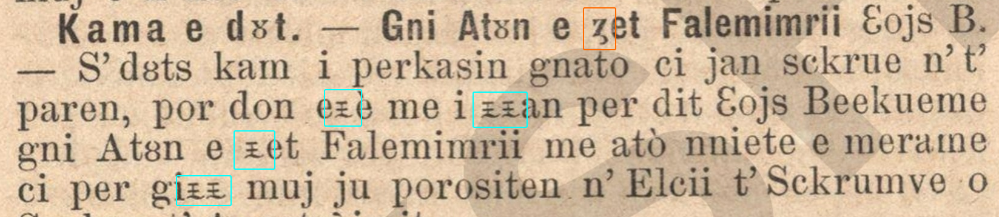
Domenico Pasi (1896), Disa habere përmi apostollim t’ urats, Shkodër: Catholic College Press, page 3. A z with a hook is employed regularly in bold-face, both in this and other short pamphlets published in the same period. Non-bold text keeps the usual form. (Image source: BKSH)
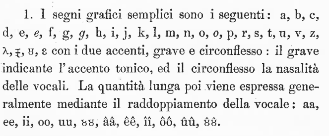
Francesco Rossi da Montalto, Gaspare Crasnich, ed. (1870), Il vangelo di S. Matteo, tradotto dalla volgata nel dialetto albanese ghego scutarino, London, uses a regularised and 1:1 phonetic alphabet to represent the dialect of Shkodër, using the alphabet in use in the city as a starting gound. The italic vs. non-italic distinction used to differentiate e from ë is carried over from the other Gospel translations made in London, and the same concept is used to differentiate g from gj and o from œ. This practice cannot be seen elsewhere from the London Gospels. (Image source: British Bible Society)
Primary sources
I present forms from various works written in the Catholic alphabet.
Gjon Buzuku (1555), Meshari, manuscript in the Vatican Library
Pjetër Budi (1618), Dottrina Christiana, Rome: B. Zannetti
Pjetër Budi (1664), Dottrina Christiana (2nd ed), Rome: Propaganda Fide
Pjetër Bogdani (1685), Cuneus Prophetarum, Padova: Tipografia del Seminario
A letter from the elders of Gashi directed to the Pope (1689)
Kuvendi i Arbënit (1706), Rome: Propaganda Fide
Giuseppe Guagliata (1856), Dottrina e Kërshten, Rome: Propaganda Fide
Vincenzo Basile (1873), Rruga e Parrisit, Rome: Propaganda Fide
Giacomo Jungg (1887), Kulshedra e shpirtit, Shkodër: Zoja e Papërlyeme
Pesmdhet biseda t’ Shejtit sh’ Leonard prej Porto Maurizio (1900), Shkodër: Zoja e Papërlyeme
Smuetorja e Austri-Hungaris (1904), Shkodër
Table with comparisons
year
dh
Dh
ll
Ll
y
Y
z
Z
1555
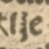
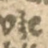
not used
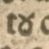
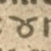
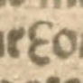
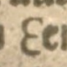
1618
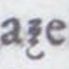
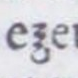
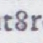
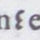
1635
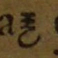
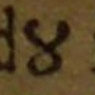
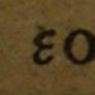
1664
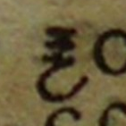
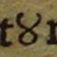
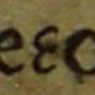
1685
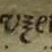
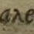
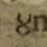
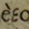
1689
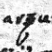
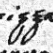
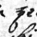
not used
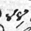
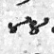
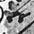
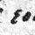
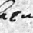
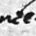
1706
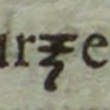
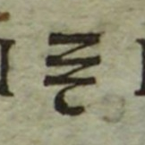
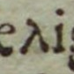
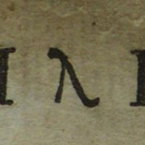
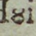
—
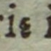
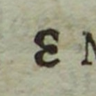
1856
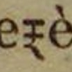
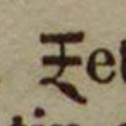
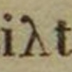
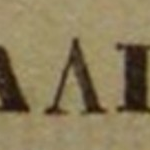
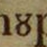
1873
—
—
1887
—
—
1900
—
1904
—
—
—
Additional characters used by Buzuku (1555).
image
encoding
⟨ћ⟩ CYRILLIC SMALL LETTER TSHE
⟨ʒ⟩ LATIN SMALL LETTER EZH
⟨Ʒ⟩ LATIN CAPITAL LETTER EZH
A new encoding.
⟨ç⟩ LATIN SMALL LETTER C WITH CEDILLA
The last symbol, which stands for c, is included here because has been occasionally incorrectly transcribed as ⟨ƹ⟩ LATIN SMALL LETTER EZH REVERSED. Considering it most likely stands for a ligature of ⟨cz⟩, I believe the best option is to spell it as a normal Latin ⟨ç⟩. The use of ⟨ꝣ⟩ LATIN SMALL LETTER VISIGOTHIC Z could also be justified, but is not necessary.
Remarks on encoding
New codepoints
image
possible name
LATIN SMALL LETTER ALBANIAN XI
LATIN CAPITAL LETTER ALBANIAN XI
LATIN SMALL LETTER ALBANIAN VJED
Secondary sources
Demiraj, Bardhyl (2025). “Ndikimi gjuhësor-kulturor sllav në ‘Mesharin’ e Gjon Buzukut — një narrativ shkencor-filologjik.”, Studime Filologjike, 2, pp. 5–56
Rrota, Justin (1936). Për historin e alfabetit shqyp. Pasqyra e shembuj për shkolla të mjesme, Shkodër: Shtyp. Françeskane
Skendi, Stavro (1960). History of the Albanian Alphabet: A Case of Complex Cultural and Political Development, in Südost-Forschungen, 29, Munich, pp. 263–284
Genesin, Monica; Matzinger, Joachim (2019). “Albania Settentrionale Crocevia Adriatico. Influenze Slavo-Meridionali e Italiane in Due Opere a Carattere Religioso.” in Mediterranean Language Review, vol. 26, pp. 107–24
Notable works in Catholic Alphabet
For each, only the first edition is considered. Does not include works of lesser importance.
Gjon Buzuku (1555), Meshari, manuscript in the Vatican Library, 200 pp.
Pjetër Budi (1618), Dottrina Christiana, Rome: Propaganda Fide, 229 pp.
Pjetër Budi (1621), Speculum Confessionis, Rome: Propaganda Fide, 408 pp.
Pjetër Budi (1621), Rituale Romanum, Rome: Propaganda Fide, 374 pp.
Frang Bardhi (1635), Dictionarium Latino-Epiroticum, Rome: Propaganda Fide, 222 pp.
Pjetër Bogdani (1691), Cuneus Prophetarum, Padova: Tipografia del Seminario, 344 pp.
Francesco Maria da Lecce (1702). Dittionario italiano-albanese, manuscript, 535 pp.
Kuvendi i Arbënit (1706). Rome: Propaganda Fide, 115 pp.
Francesco Maria da Lecce (1716). Osservazioni grammaticali nella lingua albanese, Rome: Propaganda Fide, 228 pp.
Gjon Nikollë Kazazi (1743), Breve compendio della dottrina cristiana, Rome: Propaganda Fide, 46 pp.
Giuseppe Guagliata (1845), Dottrina e Kërshten, Rome: Propaganda Fide, 288 pp.
Vincenzo Basile (1845), Rruga e Parrisit, Rome: Propaganda Fide, 144 pp.
Udha e shejtës kryq e tjera pun’ t’ divoçme (1862). Rome: Propaganda Fide, 276 pp.